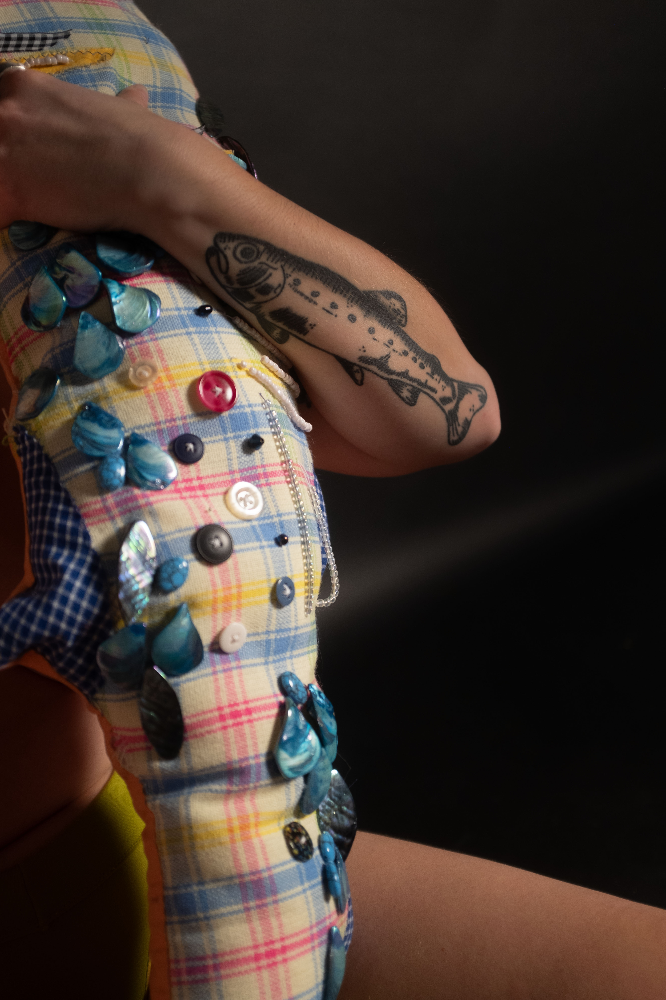
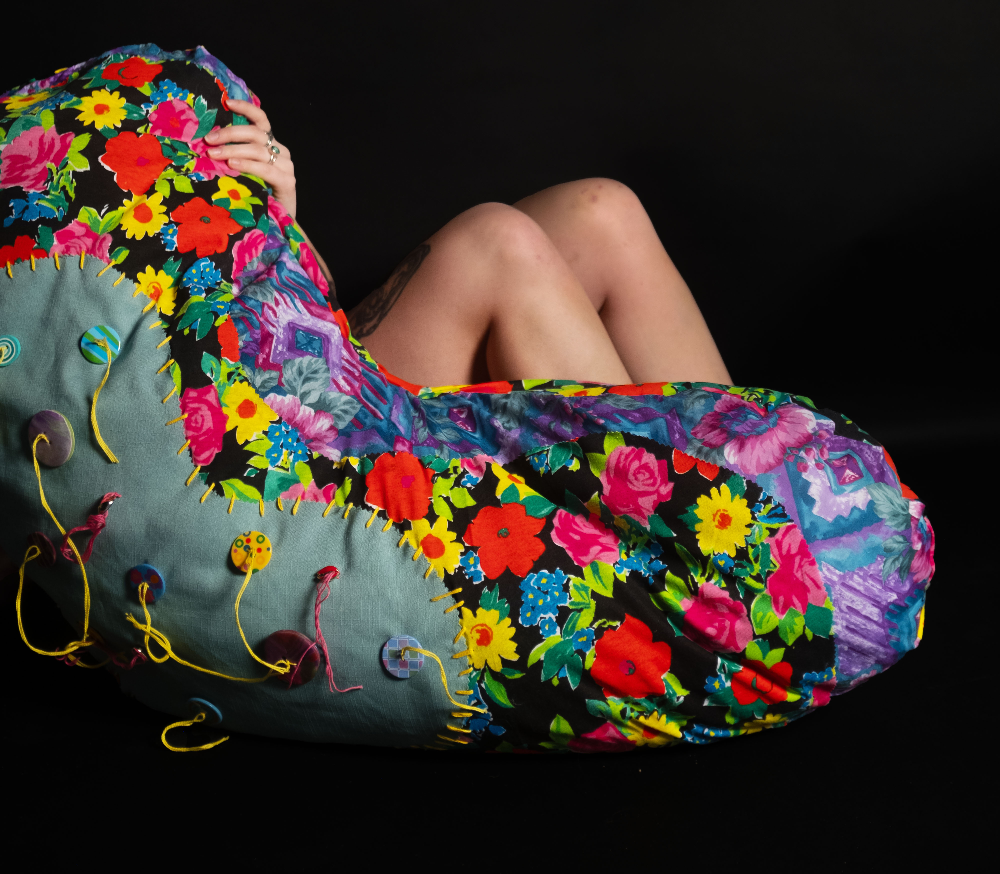
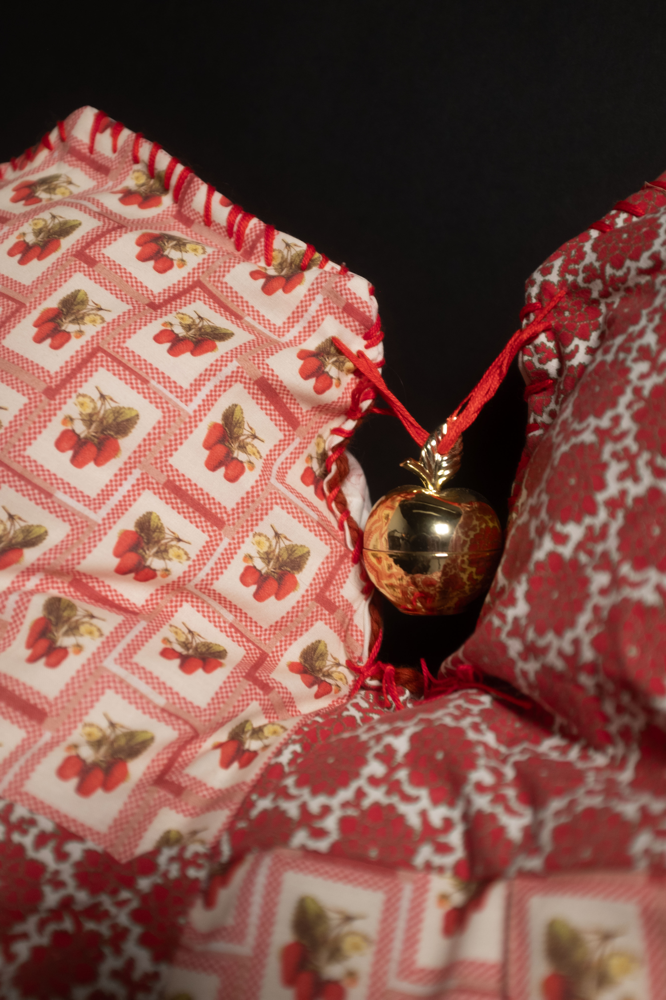
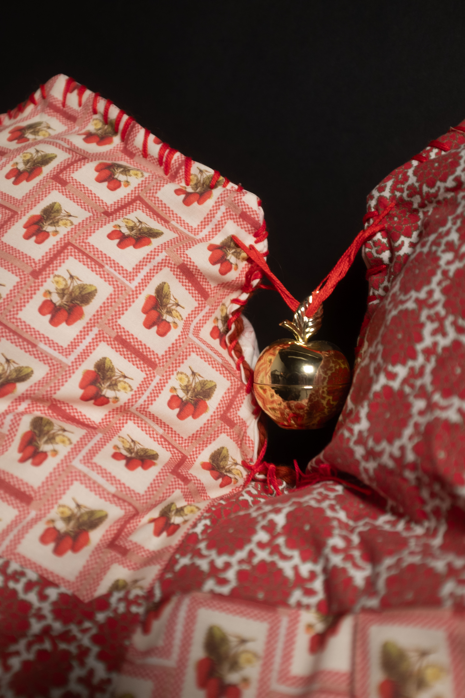

AM I SOFT? by Lydia Laslavic
Am I soft? Is a series of soft sculptures and photographs personifying my experience of becoming tattooed. Tattoos traditionally are very hard and masculine in who is accepted as being tattooed and who can tattoo. While creating these soft and kitschy renditions of them, I am now behind the needle. These tattoo creations hold their weight off my body while mimicking it. Like the body, they present their own posture, lumps, and folds. While being heavily embellished to establish a presence.
Like these sculptures, I insert myself into a space that has long been male-dominated. The symbols I have held to permanence are all feminine. I utilize hyper-femme materials in the work to parody these stereotypes. Ribbons, lace, beading, and floral print fabrics. All items used in women's clothing and performance pieces.
With the combination of photography, I continue to tackle the judgment placed on me and my work. Now, the implications for the viewer's eyes as they see the lumps and folds without the safety of stuffing and shiny beading.


 
